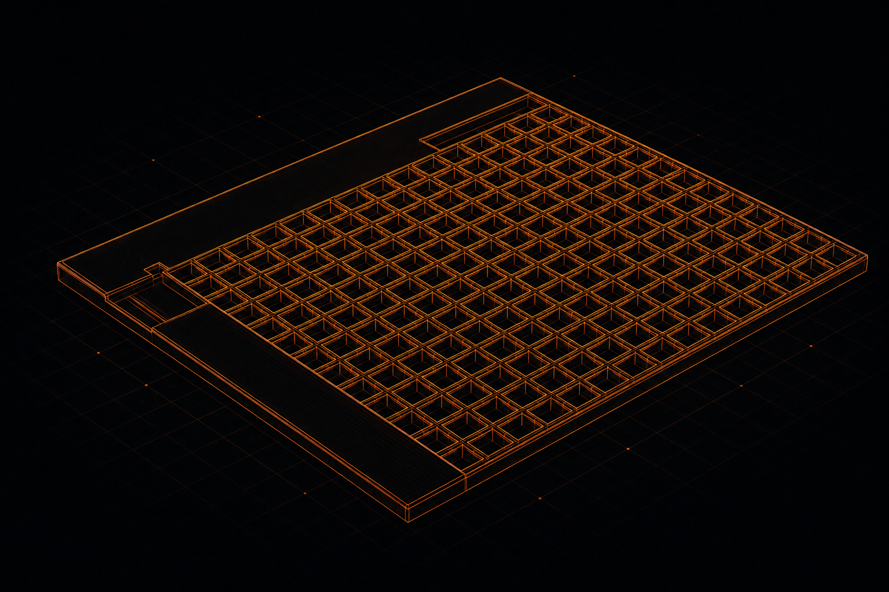

Parametric Grid Generation Platform
Onshape configuration framework that converted repetitive CAD work into a scalable, rule-based design platform for manufacturing-ready grid variants.
Explore System
Focused on the intersection of architecture, manufacturing, automation, product development, and systems optimization.
Selected Work
Onshape configuration framework that converted repetitive CAD work into a scalable, rule-based design platform for manufacturing-ready grid variants.
Explore System
System-level production analysis connecting equipment behavior, operator interaction, material flow, and recovery methods to throughput variability.
View Analysis
Production fixture that standardized grid positioning, enforced assembly orientation, and reduced operator-dependent variation.
See FixtureI build configurable CAD workflows, design automation tools, and manufacturing improvements for teams that need repeatable engineering outputs.
The work focuses on Onshape configurations, computational design, continuous improvement, fixture development, and automation planning.
Strong fits include configurable product logic, manual CAD reduction, manufacturing handoff cleanup, process bottlenecks, fixture workflows, and early automation planning.